항공전자정비기능사 (2012-04-08 기출문제)
1과목: 임의 구분
1. 국제 민간항공기구에 의해 단거리 항법장치의 표준으로 채택된 장비로 항공기의 방위각을 알려주는 장비는?
- ADF
- NOB
- DME
- VOR
(정답률: 29%)

2. 자동비행 장치(Automatic Flight Control System)에 해당되지 않는 것은?
- 자동조종 장치
- 자동추력 제어 장치
- 자동방향 탐지기
- 자동착륙장치
(정답률: 20%)
3. 자동 방위 측정기 (ADF)에서 방향 탐지 및 방위를 결정하는데 사용하는 안테나는?
- 로드 안테나
- 야기 안테나
- 루프 안테나
- 빔 안테나
(정답률: 47%)
4. 조종실내의 모든 소리를 녹음하고, 기장 및 부조종사의 통화내용을 기록하는 장치는?
- CVR
- VOR
- FDR
- QAR
(정답률: 50%)
5. 합성 개구 레이더(SAR: synthetic aperture radar)란 어떤 용도의 레이더인가?
- 전방의 구름 상태 관측용
- 지형 지물 탐지용
- 난기류 등의 관측용
- 이동 중인 항공기 관측용
(정답률: 25%)
6. 다음 중 조종실 음성기록장치에 대한 설명으로 적합하지 않은 것은?
- 승무원의 목소리를 포함하여 조종실 내의 모든 소리를 기록한다.
- 전원은 항공기의 주엔진으로부터 구동되는 발전기로부터 전원을 공급받도록 되어있다.
- 비행기가 이륙하여 착륙할 때까지의 음성통신을 모두 기록한다.
- 대개 승무원의 마지막 목소리가 기록되어 dLTrl 때문에 국제법에 의해 공개하지 못하도록 되어 있다.
(정답률: 27%)
7. 비행 자료 기록 장치가 물 속에 빠졌을 때 수중 위치표시기(ULB)에서 보내는 신호로 알맞은 것은?
- 빛신호
- 음성신호
- 초음파 펄스 신호
- 레이저 신호
(정답률: 43%)
8. 다음 중 항공기 자동조종장치(Auto Pilot System)의 사용 목적으로 적합하지 않은 것은?
- 비행 자료를 기록하여 차후 조종방법을 분석하고 향상 시키는데 잇다.
- 비행 중 난류(turbulence)를 받더라도 자동으로 항공기를 안정상태로 하는데 있다.
- 항공기 조종사의 부담과 피로를 덜어주는데 dLT다.
- 항공기의 안전성을 향상시키고 쾌적한 비행을 하게 하는데 있다.
(정답률: 40%)
9. 다음 중 전파고도계의 구성요소가 아닌 것은?
- 송수신기
- 수직 자이로
- 안테나
- 고도 지시계
(정답률: 38%)
10. 자동 조종 장치의 구성요소인 비행 제어 컴퓨터에 입력되는 신호로 거리가 먼 것은?
- 요 각속도
- 기수 방위
- 항공기 자세
- 전파 수신기 신호
(정답률: 19%)
11. 계기착륙장치(ILS)의 구성에 해당하지 않는 것은?
- 로컬라이저
- 윈드시어
- 마커 비컨
- 클라이드 슬로프
(정답률: 44%)
12. 공항 근처의 시정이 불량할 때, 항공기가 활주로에 안전하게 착륙할 수 있도록 항공기의 진행 방향, 비행자세, 할강 제어 등의 정보를 제공해 주는 장치는?
- 관성 항법 장치
- 거리 측정 장치
- 계기 착륙 장치
- 자동 방위 측정기
(정답률: 50%)
13. 항공용 주파수 대역 중 초단파(VHF) 통신 장치의 사용 주파수는?
- 2~25(MHz)
- 118~136(MHz)
- 225~400(MHz)
- 960~1215(MHz)
(정답률: 40%)
14. 비행의 안전과 경제적인 운항을 위한 조종사 지원 시스템으로 조종사의 업무경감에 큰 기여를 하고 있는 것은?
- 계기착륙장치(ILS)
- 비행자료기록장치(FDR)
- 자동조종 시스템
- 비행관리 시스템(FMS)
(정답률: 27%)
15. 한정된 공역을 많은 항공기가 사용하면서 지상에서 항공기에 지시를 내리기 위해 필요한 것은?
- DME
- ATC
- VOR
- INS
(정답률: 38%)
16. 초단파 전방향 무선표지 지상국을 기준으로 한 항공기의 방위각이 이고 기체의 침로가 270°일 EO 항공기에서 지상국을 볼 EO의 상대방위로 옳은 것은?
- 45°
- 135°
- 270°
- 315°
(정답률: 20%)
17. 비행자료기록장치(FDR)의 충격 보호 용기에 대한 설명으로 옳지 못한 것은?
- 강화 티타늄 EH는 스테인리스강을 소재로 만든다.
- 30분간 1100℃의 온도에서도 견딜 수 있어야 한다.
- 비행 기록 장치에서 자기 테이프는 약 200℃에서 녹는다.
- 반도체 기억 소자는 1200℃를 내구 온도로 한다.
(정답률: 22%)
18. 다음 ( )안에 들어갈 알맞은 것은?
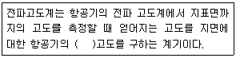
- 압력
- 해발
- 절대
- 정압
(정답률: 32%)
19. 다음 ( )안에 들어갈 내용으로 가장 적합한 것은?
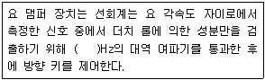
- 0.⑤~0.5
- 0.5~1.5
- 1.5~2.5
- 2.5~4.5
(정답률: 13%)
20. 활주로에 접근하는 항공기에 활주로 중심선을 제공해 주는 지상 시설물은?
- 글라이드 슬로프(Glide Slope)
- 로컬라이저(Localizer)
- 마커 비콘(Marker beacon)
- 계기착륙장치(ILS)
(정답률: 38%)
2과목: 임의 구분
21. 거리측정장치(DME)에서 항공기에 탑재된 장치의 송신과 수신 주파수의 차이는 몇 (MHz)인가?
- 55MHz
- 63MHz
- 71MHz
- 79MHz
(정답률: 22%)
22. 활주로에 접근하는 항공기가 안전하게 착륙할 수 있도록 전파 신호를 이용하여 활주로에 대해 적절한 하강을 하도록 수직 방향의 위치 신호를 제공해 주는 장치는?
- 로컬라이저
- 글라이드 슬로프
- 마커 비컨
- 전파고도계
(정답률: 32%)
23. 조종사가 시계 비행으로 착륙시키거나 착륙을 포기할 것인가를 결정하는 고도는?
- 결심고도
- 기압고도
- 비행고도
- 절대고도
(정답률: 40%)
24. 조종실 음성 기록 장치에 기록된 대화는 충돌 전 최종 어느 정도의 시간까지 지워지거나 덮어쓰기가 되지 않아야 하는가?
- 10분
- 20분
- 30분
- 60분
(정답률: 34%)
25. 비행 사고 전에 무엇이 잘못되어 가고 있는지를 알려주기 때문에 문제 발생 예방에 유익한 장비는?
- 신속 접근 기록 장치
- 비행 기록 장치
- 조종실 음성 기록 장치
- 비행 자료 수집 장치
(정답률: 22%)
26. 다음 내용이 설명하는 것은 무엇인가?
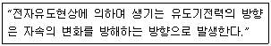
- 렌쯔의 법칙
- 플레밍의 왼손 법칙
- 오른나사의 법칙
- 플레밍의 오른손 법칙
(정답률: 40%)
27. 진공 중에 놓인 Q[C]의 전하에서 발산하는 전기력선수는?
- Q / 4πε0
- ε0Q
- Q / ε0
- 4πε0Q
(정답률: 19%)
28. 다음 중 병렬 공진시에 최대가 되는 것은?
- 임피던스
- 어드미턴스
- 전압
- 전류
(정답률: 17%)
29. RLC 직렬회로에서 XL＜Xc일 때 전압과 전류의 위상 관계는?
- 전압은 전류보다 위상이 ϕ만큼 뒤진다.
- 정압은 전류보다 위상이 ϕ만큼 앞선다.
- 전압은 전류와 동위상이다
- 전압과 전류는 위상차와는 관계가 없다.
(정답률: 20%)
30. 길이 0.5(m)의 쇠막대가 자속밀도 1(Wb/m2)인 자장과 30°의 방향으로 20m/s의 속도로 이동시 발생되는 유기기전력은 몇 (V)인가?
- 1V
- 3V
- 5V
- 7V
(정답률: 14%)
31. 고유저항이 ρ(Ω-m), 길이가 l(m), 반지름이 r(m)인 전선의 저항 R(Ω)은?
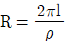
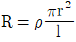
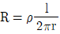
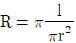
(정답률: 22%)
32. 어느 도체의 단면을 3분 동안에 720c 의 전기량이 지나갔을 경우, 전류의 크기A는?
- 2A
- 3A
- 4A
- 5A
(정답률: 32%)
33. 배율기의 저항에 대한 설명으로 옳은 것은?
- 전압계의 측정범위를 넓힐 때 사용한다.
- 전류계의 측정범위를 넓힐 때 사용한다.
- 저항계의 측정범위를 넓힐 때 사용한다.
- 용량계의 측정범위를 넓힐 때 사용한다.
(정답률: 22%)
34. RC 직렬 회로에서 R=500kΩ, C=2㎌일 때 시정수(sec)는?
- o.4
- 1.0
- 2.5
- 10
(정답률: 22%)
35. 정전용량 C1과 C2의 직렬 회로에 V(V)의 직류 전압을 가할 때 C1 양단의 전압은?
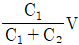
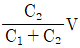
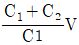
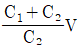
(정답률: 25%)
36. 20kΩ저항 양 단자에 100v를 인가했을 때 흐르는 전류는?
- 1mA
- 5mA
- 10mA
- 20mA
(정답률: 27%)
37. 단상 전파정류회로의 이론적 최대효율은 약 몇 %인가?
- 40.6%
- 52.8%
- 68.4%
- 81.2%
(정답률: 15%)
38. 동일한 NPN TR 2개를 접속하여 하나의 TR과 같은 작용을 하도록 하는 것은?
- 다링톤 접속
- 인버티드 접속
- 스태거 동조회로
- 전도 증폭회로
(정답률: 15%)
39. 다음 연산증폭회로에서 출력접압 V0은?
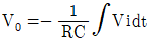
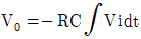
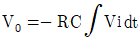
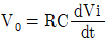
(정답률: 15%)
40. 링(ring)변조회로는 어떤 변조방식인가?
- 위상변조
- 주파수변조
- 평형변조
- 불평형변조
(정답률: 29%)
3과목: 임의 구분
41. 정현파 발진회로에 속하지 않는 것은?
- LC 발진회로
- RC 발진회로
- 수정 발진회로
- 블로킹 발진회로
(정답률: 25%)
42. 전원회로에서 무부하시 직류전압이 11V, 전부하시 직류전압이 10V일 때 전압변동률은 몇 %인가?
- 5%
- 10%
- 15%
- 20%
(정답률: 44%)
43. 저주파 증폭기에서 결합콘덴서의 용량이 부족할 때 나타나는 현상은?
- 진폭 일그러짐이 생긴다.
- 고역 주파수의 이득이 감쇠된다.
- 저역 주파수의 이득이 감쇠된다.
- 내부 변조 일그러짐이 생긴다.
(정답률: 20%)
44. 다음의 증폭회로는 djEJs 바이어스 회로인가?
- 고정 바이어스
- 자기 바이어스
- 전압궤환 바이어스
- 전류궤환 바이어스
(정답률: 27%)
45. 정압이득이 40dB인 증폭회로에 궤환률 β=0.01의 부궤환을 걸었을 때 증폭도는?
- 25
- 50
- 54
- 68
(정답률: 29%)
46. 반도체 정류기에서 1V 순바이어스 전압에 대해 10mA의 전류가 흐르고, 1V 역바이어스 전압에 대해 4uA의 전류가 흘렀다면 정류비는?
- 250
- 350
- 2500
- 3500
(정답률: 20%)
47. 수정발진기는 무엇을 이용한 것인가?
- 병렬공진
- 인입현상
- 인장진동
- 압전기현상
(정답률: 27%)
48. 다음 중 FET(전계효과 트랜지스터)에 대한 설명으로 적합하지 않은 것은?
- BJT보다 열적으로 안정하다
- BJT보다 이득대역폭 적이 크다.
- 전압제어형 소자이다.
- GATE, SOURCE, DRAIN 등 3개의 전극이 있다.
(정답률: 14%)
49. 다음 중 내부 잡음이 없는 수신기의 잡음지수는?
- 0.5
- 1
- 2.5
- 3
(정답률: 38%)
50. 오실로스코프의 수평축 입력단자를 이용하여 교류 측정시피측정 전압의 소인폭 조절과 관계있는 회로 부분은?
- 수직축 증폭회로
- 트리거 발생회로
- 수평축 증폭회로
- 초퍼 스위칭회로
(정답률: 13%)
51. 미소전류로 동작되며 일반적으로 고주파 전류측정에 많이 사용되고 있는 계기는?
- 가동철편형
- 전류력계형
- 유동형
- 열전대형
(정답률: 20%)
52. 다음 중 미지의 값을 측정할 때 참값에 얼마나 일치하는가를 나타내는 것은?
- 감도
- 신뢰도
- 정도
- 확도
(정답률: 15%)
53. 3상 평형 부하의 전력을 2전력계법으로 측정한 결과 두지시계의 지시값이 2.2kW와 1.8kW이었다. 부하의 전력은?
- 1.8kW
- 2.2kW
- 4kW
- 10kW
(정답률: 22%)
54. 디지털 멀티미터의 특징에 대한 설명으로 옳은 것은?
- 아날로그 회로 시험기에 비해 개인차가 있다.
- 입력 임피던스가 매우 낮다.
- 측정 정밀도가 좋다.
- 임피던스가 높아 피 측정량에 미치는 영향이 많다.
(정답률: 15%)
55. 다음 그림에서 전류계 A2의 내부저항 값은? (단, A1=30mA, A2=20mA, R=4Ω임) (문제 복원 오류로 그림이 없습니다. 정답은 1번 입니다. 정확한 그림 내용을 아시는분 께서는 오류신고 또는 게시판에 작성 부탁드립니다.)
- 2Ω
- 4Ω
- 6Ω
- 8Ω
(정답률: 27%)
56. 자동 평형 기록계기에 대한 설명 중 옳지 않은 것은?
- 펜과 용지에서 생기는 마찰오차를 방지한다.
- 실선식과 타점식이 있다.
- 자도영형 서보기구를 사용한다.
- 영위법에 의한 측정원리를 이용한다.
(정답률: 29%)
57. 수신기의 주파수 특성 및 파형의 일그러짐과 관계되는 수신 특성은?
- 감도 특성
- 충실도 특성
- 선택도 특성
- 잡음지수 특성
(정답률: 15%)
58. 측정 감도가 높아 정밀 측정에 가장 적합한 측정법은?
- 영위법
- 편위법
- 반경법
- 직편법
(정답률: 20%)
59. 정전 전압계의 특징에 대한 설명으로 틀린 것은?
- 주로 저압 측정용 전압계로 많이 쓰인다.
- 정전 전압계 또는 전위계는 전압을 직접 측정하는 계기이다.
- 정정 전압계의 제동은 공기 제동이나 액체 제동 또는 전자 제동을 사용한다.
- 대표적인 예로는 아브라함 빌라드 형가 캘빈 정전 전압계가 있다.
(정답률: 7%)
60. 기전력 100v, 내부저항 33Ω인 전지에 내부저항 300Ω인 전압계를 접속할 때, 전압계의 지시값은?
- 약90V
- 약93V
- 약96V
- 약100V
(정답률: 14%)